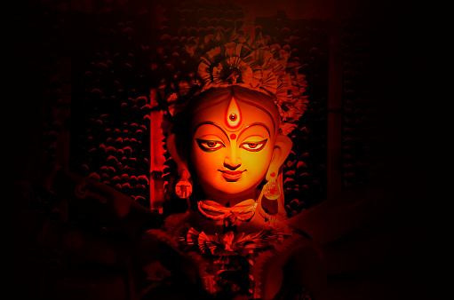

মা
আসছে ...
PUJO COUNTDOWN ::
Durga Puja is an annual festival celebrated in
September or October, most notably in Kolkata,
in West Bengal of India, but also in other parts
of India and amongst the Bengali diaspora. It
marks the ten-day worship of the Hindu mother-goddess
Durga. In the months preceding the festival, small
artisanal workshops sculpt images of Durga and her
family using unfired clay pulled from the Ganga River.
The worship of the goddess then begins on the inaugural
day of Mahalaya, when eyes are painted onto the clay
images to bring the goddess to life. It ends on the
tenth day, when the images are immersed in the river
from where the clay came. Thus, the festival has also
come to signify ‘home-coming’ or a seasonal return to
one’s roots. Durga Puja is seen as the best instance
of the public performance of religion and art, and
as a thriving ground for collaborative artists and
designers. The festival is characterized by large-scale
installations and pavilions in urban areas, as well
as by traditional Bengali drumming and veneration of
the goddess. During the event, the divides of class,
religion and ethnicities collapse as crowds of spectators
walk around to admire the installations.